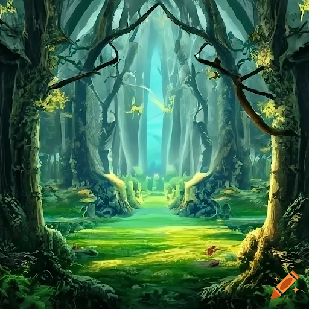
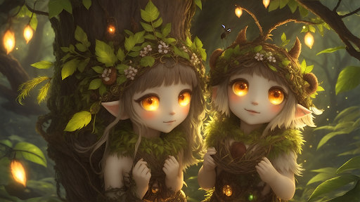
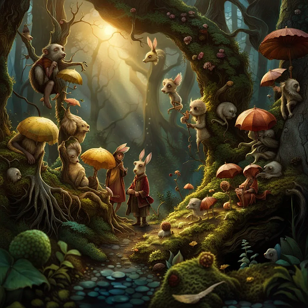
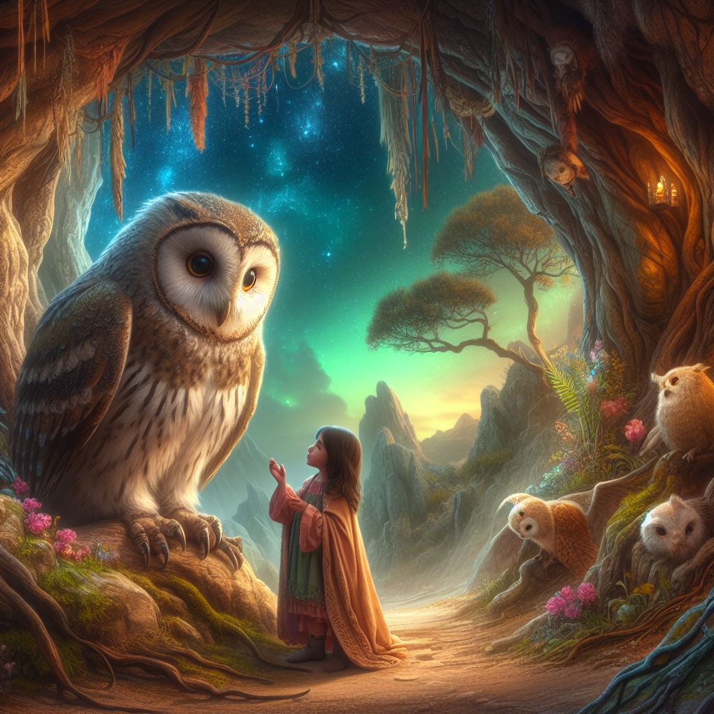
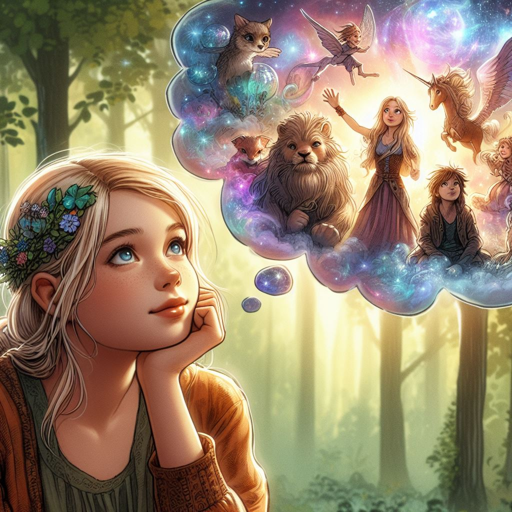
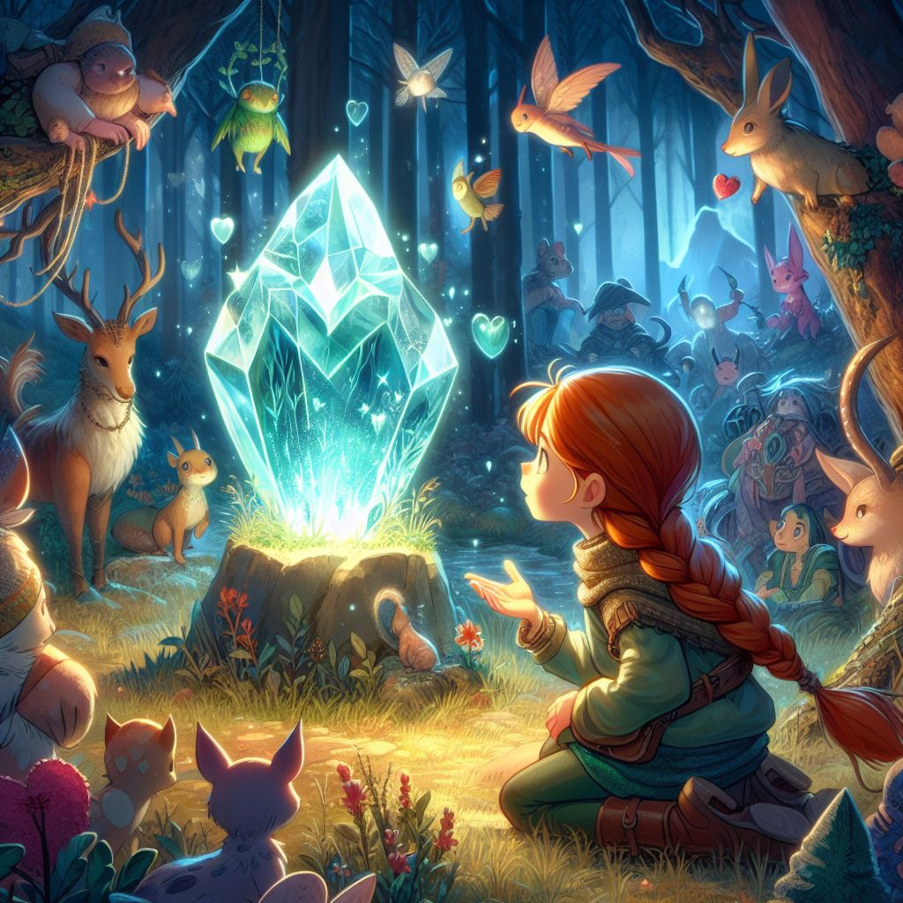

Once upon a time in a quaint village, there resided a spirited and
inquisitive girl named Daisy.
Recently, Daisy had experienced the loss of her cherished companion,
Elise, leaving her heart heavy with sorrow. Elise, a radiant golden
retriever adorned with silky fur, had been Daisy's constant source
of joy and comfort.
Daisy longed dearly for the opportunity to relive those precious
moments with her beloved Elise once more.
One sunny day, Daisy decided to go for a stroll to the outskirts of
her village.
Taking a new route, she chanced upon a hidden path. It led to a
scenery she had never seen before.
She wondered if this could be the enchanted Sunnyvale Forest that
she had heard about in the stories her grandmother used to tell her.
She moved forward to explore and found that the forest was filled
with vibrant flowers, talking animals, and enchanted trees that
whispered stories of ancient times.

Daisy was fascinated by the wonders of the magical forest and made
friends with the charming creatures who lived there.
The animals taught her to respect nature, and the trees shared the
importance of kindness and harmony. Every visit to the magical
forest filled Daisy with joy and wisdom.

one day, daisy overheard the animals talking about a magical crystal
hidden deep within the forest. legend had it that this crystal
possessed the power to make one wish come true.
daisy's eyes sparkled with excitement, and she decided to embark on
a quest to find the magical crystal to bring elise back.

As Daisy journeyed through the forest, overcoming obstacles and solving riddles, she finally reached the heart of the enchanted forest. There, nestled among the roots of the oldest tree, she found the dazzling crystal. The crystal shimmered with an otherworldly glow, tempting Daisy to make a wish.
However, just as Daisy was about to make her wish, a wise owl appeared and spoke, "Child, the magic of the crystal comes with great responsibility. Whoever seeks its power can have any one wish granted. However, in exchange, the spirit of the forest will entrust them with the role of a protector. Your form will change to become one with the forest. A forest spirit who will exist close to eternity, forever living in this forest as its guardian."

Daisy froze when she heard this. So this meant that all of the
mystical creatures she saw until now, were all once human? The power
of the crystal had granted them their heart's deepest desire but had
robbed them of the life they used to live.
She recalled their wistful eyes. How her newfound friends were
always overjoyed to meet her and found comfort in her presence. How
some had even tried to accompany her back to the human realm but
were stopped by the barrier separating their two worlds. It all made
sense now.

Recognising the dilemma before her, Daisy knew that if she made her
wish, it could change her life but it would bring back her beloved
friend, Elise. As she pondered before the grand tree considering
what decision to make, slowly her new mystical friends gathered
around the tree. All with their eyes on Daisy and the shimmering
crystal, patiently awaiting her choice.
